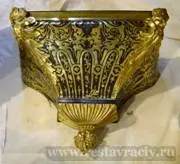
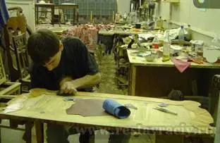
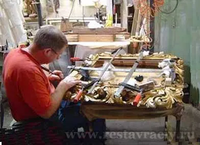

Услуги
Что такое реставрация мебели?
Обычно слово реставрация ассоциируется с восстановлением пострадавших от времени вещей.


О чём рассказывает мастерская
- Идеи реставрации мебели
- Реставраторы мебели
- Этапы реставрации мебели
- Что значит реставрация?
- Что такое реставрация
- Стандарты реставрации
- Венецианская Хартия реставраторов
- Афинская Хартия
- Принципы реставрации
В материале мастерской
Фотографии и детали

 Открыть снимок у мастерской
Открыть снимок у мастерской 


Открыть снимок у мастерской


Открыть снимок у мастерской
Посмотреть снимки с сайта мастерской 4
Оригинальные фотографии откроются здесь с сайта мастерской.
 Открыть снимок у мастерской
Открыть снимок у мастерской  Открыть снимок у мастерской
Открыть снимок у мастерской  Открыть снимок у мастерской
Открыть снимок у мастерской  Открыть снимок у мастерской
Открыть снимок у мастерской Есть похожая вещь?
Подберите ракурсы для предварительной оценки.